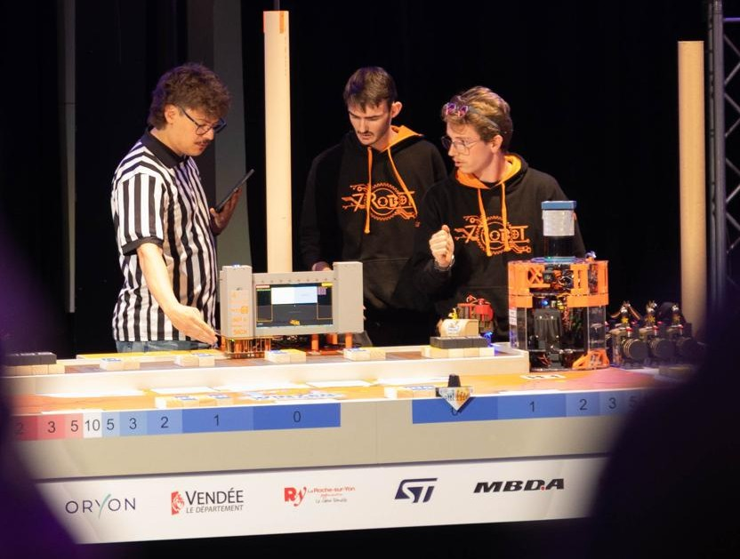
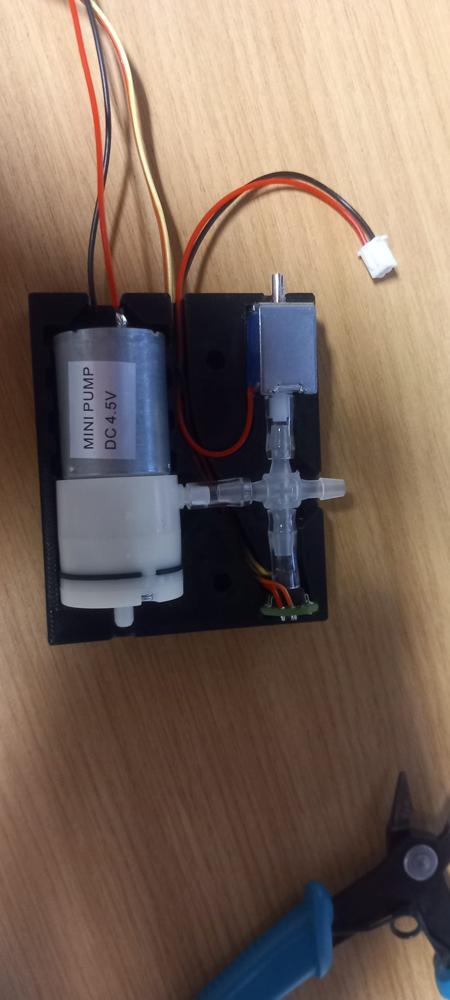
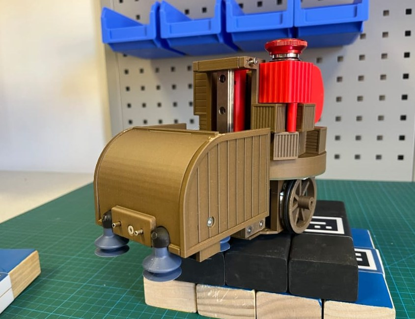
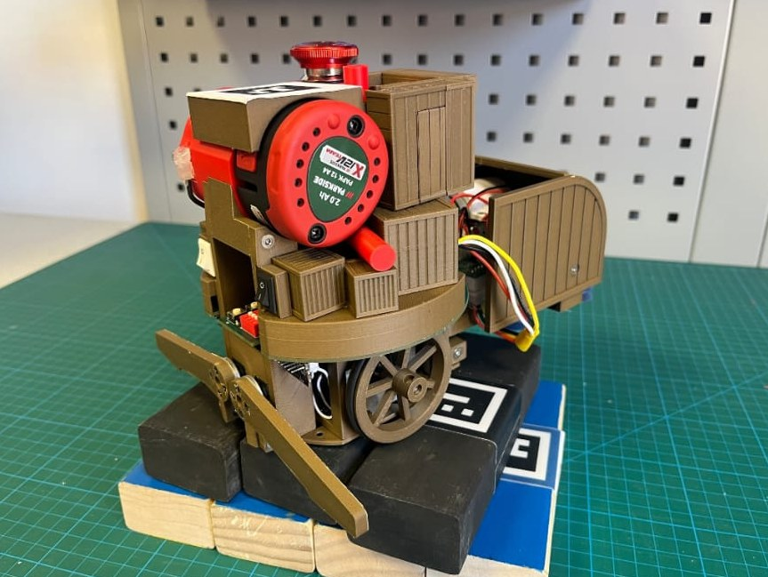
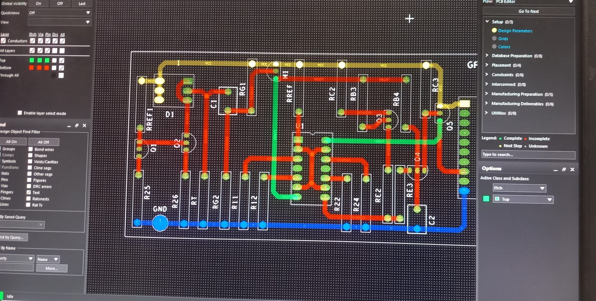
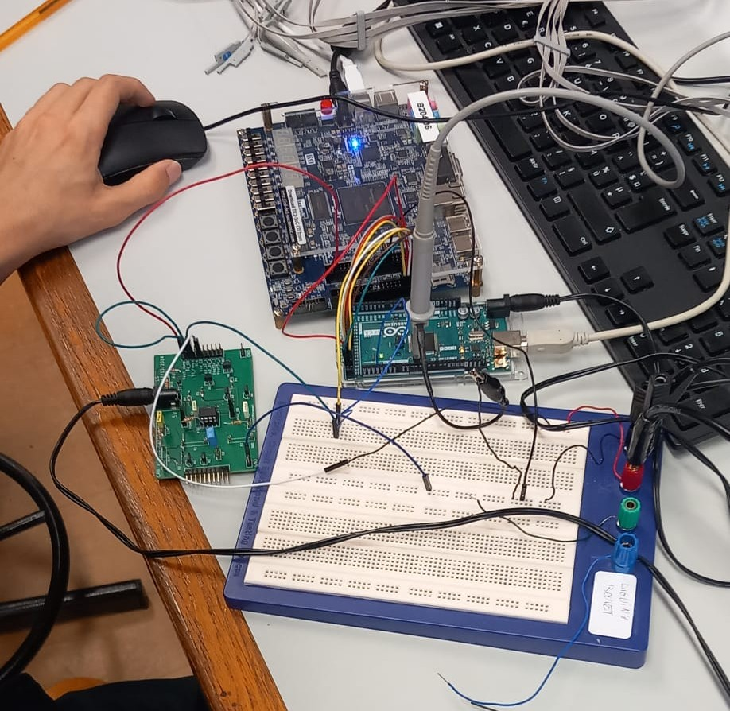
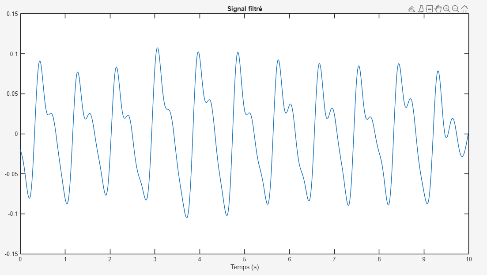

Coupe de France de Robotique (2026 & 2027) & Présidence 7Robot
Après avoir rejoint le club de robotique de l’ENSEEIHT 7Robot en première année, j’en suis devenu Président en mai 2026 : coordination d’une équipe d’environ 20 membres actifs, gestion des partenariats industriels (Elsys Design, Bootlin, Electroimpact, Dassault Systèmes), animation de formations hebdomadaires SolidWorks & RP2040, et pilotage du projet pluriannuel de robot autonome parlant R2D2 × UNIVERSEH.
Coupe de France de Robotique 2027 (En cours) : Direction d’équipe et conception mécanique complète du robot principal — ascenseur à vis trapézoïdale T8, préhenseur pneumatique à ventouses, éjecteur Venturi et électrovannes.
R2D2 × UNIVERSEH (Sept 2026 – Aujourd’hui) : Coordination d’un projet pluriannuel de robot R2D2 grandeur nature autonome et parlant, financé par UNIVERSEH et Toulouse INP.
SolidWorksImpression 3D (PLA/PETG)Découpe laserPneumatiqueRP2040 / PICROS2
Équipe 7Robot & robots au Stand N-07 — Coupe de France de Robotique

Préparation d’un match sur la grande scène de la Coupe de France de Robotique
Coupe de France de Robotique 2027 · 7Robot · En cours
Robot Principal 2027 — Base holonome, Ascenseur T8 & Préhenseur à ventouses
En tant que président de 7Robot et concepteur mécanique pour l’édition 2027, je conçois et prototype actuellement le robot principal holonome : une base omnidirectionnelle à 3 roues avec LiDAR central, un ascenseur linéaire à vis T8 équipé d’un moyeu rotatif, et un système de préhension pneumatique à ventouses sur 3 niveaux alimenté par des modules compacts intégrés (mini-pompe 4,5 V, électrovanne et capteur de pression).
État d’avancement : Ce robot est en cours de développement actif — la conception mécanique continue d’être itérée et finalisée, et les tests sur banc ci-dessous utilisent une électronique et un câblage provisoires que j’ai assemblés afin de valider la mécanique pendant que le pôle électronique finalise les PCB définitifs.
Assemblage CAO 3D SolidWorks complet (base holonome, LiDAR, ascenseur T8 & préhenseur 3 niveaux)Vue de dessus — architecture holonome 3 roues & encombrement des éléments de jeu
Test sur banc : préhension par vide multi-boîtes & rotation à 180°Test sur banc de l’ascenseur linéaire à vis T8 & du moyeu rotatif
Prototype physique — préhenseur à ventouses 3 niveaux & ascenseur T8CAO du module pneumatique (pompe, électrovanne & capteur de pression)

Module pneumatique imprimé en 3D assemblé (pompe 4,5 V, électrovanne & capteur de pression)
SolidWorksAscenseur vis T8Pneumatique par videÉlectrovannesImpression 3D & Découpe laserROS2
Coupe de France de Robotique 2026 · 7Robot · Sept 2025 – Mai 2026
« PAMI Ninja » — Robot secondaire autonome
En tant que responsable mécanique de notre robot secondaire autonome (Petit Actionneur Mobile Indépendant), j’ai conçu la structure mécanique complète, le rail d’ascenseur linéaire central à crémaillère et le double préhenseur pneumatique à ventouses, en collaboration étroite avec les pôles électronique et informatique pour intégrer notre PCB circulaire sur mesure 7Robot.
Résultat en compétition : Qualifié 8e sur 108 équipes homologuées (score maximal de 124 points sur un match) et qualification jusqu’en 8es de finale.

PAMI Ninja final — vue avant & double ventouses pneumatiques

PAMI Ninja final — vue arrière, batterie 12 V & motorisation
Test de navigation autonome & saisie de bloc par ventousesTest du mécanisme d’ascenseur sur rail linéaire central
Assemblage CAO 3D SolidWorksPrototype fonctionnel imprimé en 3DPCB circulaire sur mesure 7Robot
SolidWorksImpression 3DDécoupe laserPneumatique par videPCB sur mesure (RP2040 / PIC)
Stage ingénieur · LAERO / OMP / CNRS · Juin – Juillet 2026
Plateforme embarquée multi-capteurs de mesure environnementale
Au cours de mon stage ingénieur de 8 semaines au Laboratoire d’Aérologie (LAERO — OMP / CNRS) à Toulouse, j’ai développé une station environnementale embarquée autonome destinée aux campagnes de mesures atmosphériques sur le terrain.
Conception du schéma et routage d’un PCB sur mesure sous KiCad interfaçant plusieurs capteurs environnementaux (CO₂, baromètre, GPS, télémétrie radio/Bluetooth, enregistrement microSD) avec un Arduino Mega 2560 et deux étages d’alimentation DC/DC (12V→5V et 5V→3,3V).
Développement du firmware d’acquisition embarqué et validation des alimentations et capteurs sur banc de test.
Modélisation et impression 3D du châssis mécanique modulaire sous SolidWorks (trappe d’accès, support de pompe, régulateur thermique) et intégration de l’ensemble dans un boîtier terrain isolé thermiquement.
PCB KiCad sur mesure (06/2026 LAERO) — interface Arduino Mega & rails DC/DCCarte équipée avec Arduino Mega 2560 R3 & enregistreur microSDMise sous tension sur banc — convertisseurs DC/DC & validation des bus capteurs
Châssis SolidWorks imprimé en 3D avec PCB, télémétrie RF & pompe intégrésTrappe d’accès modulaire ouverte pour la maintenance batterie & faisceauStation complète sous tension dans son boîtier terrain isolé thermiquement
Dans le cadre de mon Travail d’Initiative Personnelle Encadré (TIPE) en classe préparatoire, j’ai conçu un robot solveur de Rubik’s Cube combinant logiciel multi-langages, électronique de puissance embarquée et mécanique sur mesure :
Python : Interface graphique (GUI) permettant de saisir la configuration initiale des couleurs du cube.
OCaml : Modélisation algébrique du cube et algorithme complet de résolution Fridrich (CFOP) (Croix, F2L, OLL, PLL).
Arduino (C/C++) & Mécanique : Pilotage des moteurs pas à pas via drivers de puissance (12V/24V), châssis modélisé sous Fusion 360 et axes de Rubik’s Cube usinés sur mesure.
Résultat : Résolution physique complète d’un Rubik’s Cube mélangé en 6 à 7 secondes.
OCamlPythonArduino (C/C++)Fusion 360Drivers moteurs pas à pas
Chaîne d’acquisition cardiaque par photopléthysmographie (PPG)
En équipe de quatre, nous avons conçu, routé, soudé et validé expérimentalement une chaîne complète d’acquisition biomédicale par photopléthysmographie (PPG) — le principe optique utilisé dans les montres connectées pour mesurer la fréquence cardiaque sans ECG.
Chaîne optique & analogique : Émetteur LED et récepteur photodiode, PCB d’amplification analogique routé sur mesure (gain 4,73 / 13,5 dB, suiveur et paire différentielle) et filtrage analogique validés par rapport aux simulations.
Conversion & Traitement numérique (DSP) : Échantillonneur-bloqueur + CAN simple rampe interfacé avec un FPGA et un Arduino, puis traitement numérique sous MATLAB/Python (rééchantillonnage, extraction de la fréquence cardiaque, vitesse d’onde de pouls et estimation de l’âge vasculaire).
Chaîne PCB complète assemblée (de gauche à droite) : Capteur optique & amplificateur → Module E/S → Filtre analogique → CAN simple rampe

Routage PCB de l’étage d’amplification analogique

Banc de test matériel — FPGA, Arduino & carte CAN simple rampeKeysight MSOX3014T — capture logique 8 bits (D0–D7)Validation en direct à l’oscilloscope du CAN simple rampe
Acquisition du signal & Traitement numérique (MATLAB)
À partir du signal optique analogique capturé en direct sur un oscilloscope Keysight (284 mVpp avec pics systoliques et encoches dicrotes visibles), nous avons traité le signal numérisé sous MATLAB : rééchantillonnage de 1200 Hz à 100 Hz (10 ms), filtrages de Butterworth passe-bas (5,0 Hz) et passe-bande (0,5–5,0 Hz) pour supprimer les pics parasites et la dérive de ligne de base, puis extraction spectrale de la fréquence cardiaque par périodogramme (1,206 Hz ≈ 72,4 BPM).
Signal PPG analogique sur Keysight MSO-X 2012A (284 mVpp, 5 kSa/s)Signal PPG brut acquis sous MATLAB (fenêtre de 10 s)

Signal PPG filtré (battements périodiques nets, dérive supprimée)Rééchantillonnage de l’acquisition brute 1200 Hz vers 100 Hz (10 ms)